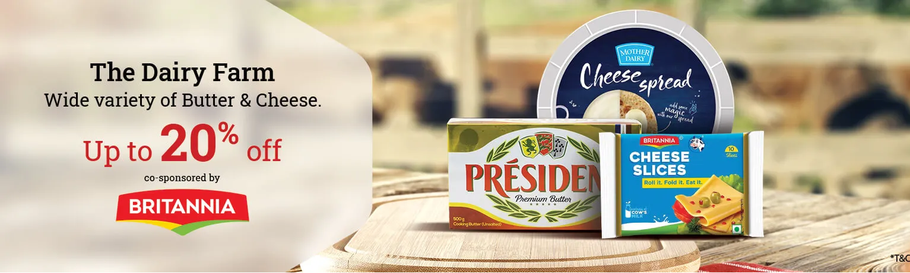

Online Supermart

Home & Kitchen
Combo Store
Hygiene & Sanitation
Eggs & Meat
Deals of the week
×
Fruits and Vegetables
Foodgrains, Oil & Masala
Bakery, Cakes & Dairy
Gourmet & World Food
Snacks & Branded Foods
Eggs, Meat & Fish
Cleaning & Household
View All
☰ Shop By Category
Login |
Sign Up
My Basket
Fruits & Vegetables Corner
Season's Must Haves